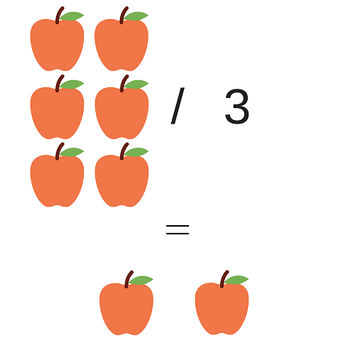

Quick Math
Multiplication Tutorial
Division is written using the division sign, "/", to indicate the number on the left being divided by the number on the right.
Division is breaking a number up into an equal number of parts.
For example, if you have 6 apples and want to have 2 apples, you can divide your current amount by 3. This is because 6 / 3 = 2, is the same as saying 6 divided into 3 groups of 2.
- Like the example on the right, 6 apples / 3 = 2 apples reads as, 6 apples divided by 3 apples equals 2 apples.
- 1 / 1 = 1 reads, one divided by one equals one
- 10 x 2 = 5 reads, ten divided by two equals five
Special cases for division:
- Any number divided by 0 is an impossible operation because a number can only be divided into at least 1 group.
Example: 5 / 0 = undefined (impossible)
- Any number divided by 1, equals the same number.
Example: 5 / 1 = 5
- Zero divided by any number, equals zero because you cannot divide 0 into any groups.
Example: 0 / 5 = 0
